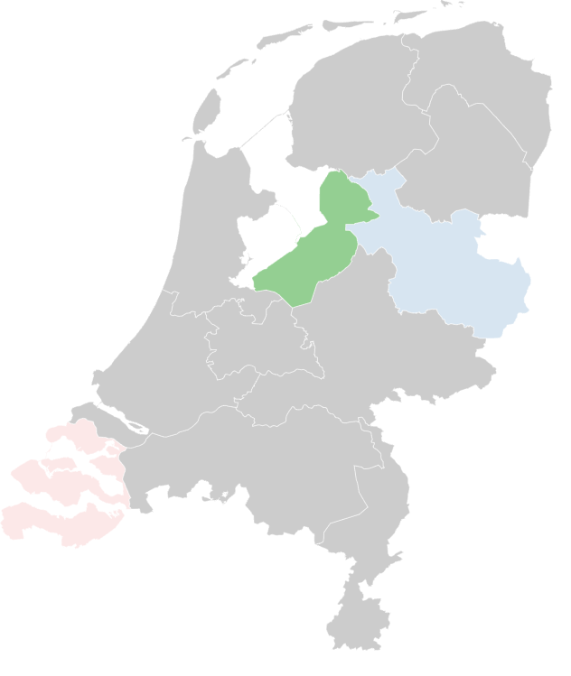
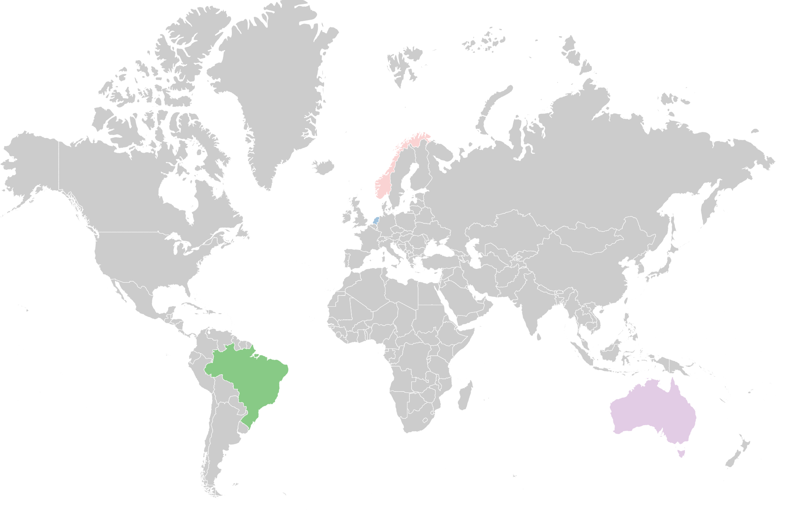

Coloring of regions in Country
Here we will color specific counties in a Country.
# Import library
import worldmap as wm
# Set the regions to plot
region = ['zeeland','Overijssel', 'flevoland']
# Colors for the accompanying regions
opacity = [0.1, 0.2, 0.6]
# Create the SVG
results = wm.plot(region, opacity=opacity, cmap='Set1', map_name='netherlands')
 |
Coloring of Country in Worldmap
Here we will color specific countries in the worldmap.
# Import library
import worldmap as wm
# Coloring of maps
county_names = ['Norway','Nederland','brazile', 'austrialia']
# Colors regions
opacity = [10, 25, 35, 15]
# Create the SVG
results = worldmap.plot(county_names, opacity=opacity, map_name='world', cmap='Set1')
 |
Retrieve all Map Names
Retrieve all the available country names in that can be used in the worldmap.
# Import library
import worldmap as wm
# Worldmap
county_names = wm.list_county_names(map_name='world')
print(county_names)
# array(['Andorra', 'United Arab Emirates', 'Afghanistan',
# 'Antigua and Barbuda', 'Anguilla', 'Albania', 'Armenia', 'Angola',
# 'Argentina', 'American Samoa', 'Austria', 'Australia', 'Aruba',
# 'Aland Islands', 'Azerbaijan', 'Bosnia and Herzegovina',
# 'Barbados', 'Bangladesh', 'Belgium', 'Burkina Faso', 'Bulgaria',
# 'Bahrain', 'Burundi', 'Benin', 'Saint Barthelemy',
# 'Brunei Darussalam', 'Bolivia', 'Bermuda', ...]
# Regions in the Netherlands
county_names = wm.list_county_names(map_name='netherlands')
print(county_names)
# array(['Drenthe', 'Flevoland', 'Friesland', 'Gelderland', 'Groningen',
# 'Limburg', 'Noord-Brabant', 'Noord-Holland', 'Overijssel',
# 'Utrecht', 'Zeeland', 'Zuid-Holland'], dtype='<U32')
Retrieve County Names
Retrieve all the available county names in that can be used in the Country.
# Import library
import worldmap as wm
# Retrieve names for specific map
county_names = wm.list_county_names(map_name='netherlands')
# Print
print(county_names)
# array(['Drenthe', 'Flevoland', 'Friesland', 'Gelderland', 'Groningen',
# 'Limburg', 'Noord-Brabant', 'Noord-Holland', 'Overijssel',
# 'Utrecht', 'Zeeland', 'Zuid-Holland'], dtype='<U32')
Convert Country to Abbrevation
Convert country names to the abbrevation.
# Import library
import worldmap as wm
results = worldmap.county2code(['Netherlands', 'Germany'])
print(results)
# (['nl', 'de'], array(['netherlands', 'germany'], dtype=object))
Convert Abbrevations to County names
Convert abbrevation to county names.
# Import library
import worldmap as wm
nl_country = worldmap.code2county('nl')
de_country = worldmap.code2county('de')
print(nl_country)
# ('nl', 'Netherlands')
print(de_country)
# ('de', 'Germany')